O sistema urinário é responsável pela produção da urina, seu transporte, armazenamento e eliminação; para cada função, um órgão correspondente.
Didaticamente é melhor dividir o sistema urinário em órgãos uropoiéticos (os rins) e a via urinária, composta pelos órgãos: ureter, bexiga e uretra.
Rim
Este órgão em forma de feijão é responsável pela produção da urina, a qual contém, entre outros componentes, a uréia, o ácido úrico e outras substâncias resultantes do metabolismo do corpo.
O rim é considerado um órgão vital e é fundamental no equilíbrio hídrico de todo o organismo.
A produção de urina nos rins é controla por um hormônio denominado ADH (hormônio anti-diurético) produzido no hipotálamo, estrutura localizada no encefálo e armazenado na glândula hipófise.
Além do ADH, há outro hormônio participante do equilíbrio hidro-iônico do organismo: a aldosterona, produzida nas glândulas supra-renais.
Ela aumenta a reabsorção ativa de sódio nos rins, possibilitando maior retenção de água no organismo.
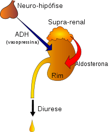
O controle da pressão arterial sanguínea também é uma função dos rins, estes órgãos controlam as concentrações de sódio e a quantidade de líquido no corpo.
Quando ocorre uma queda na pressão arterial os capilares renais são os primeiros a detectar esta situação e secretam:
Uma substância chamada renina, a qual estimula a transformação do angiotensinogênio (substância inativa presente no plasma sanguíneo) em angiotensina I, esta por sua vez é transformada em angiotensina II pela ECA (enzima conversora de angiotensina).
A angiotensina II é um potente vasoconstritor, fazendo com que ocorra a elevação da pressão arterial.
O mal funcionamento dos rins pode produzir renina em excesso causando muitas vezes a hipertensão.
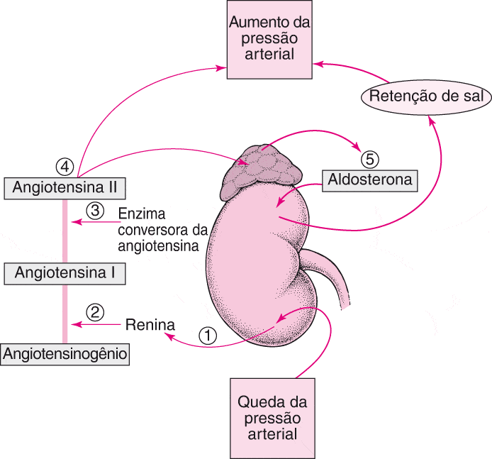
De uma forma resumida, podemos então afirmar que as funções dos rins são:
– Regulação da composição iônica do sangue
– Regulação do volume sanguíneo
– Regulação da pressão arterial
– Regulação do pH do sangue
– Liberação de hormônios
– Excreção de resíduos e substâncias estranhas
Por fim, os rins ainda produzem parte do líquido amniótico (no feto) e também funcionam como uma glândula, que libera um hormônio denominado eritropoietina, responsável por estimular a produção de células vermelhas do sangue na medula óssea.
Morfologia externa do Rim
Cada rim situa-se envolto em uma massa de tecido adiposo chamada de gordura perirrenal, posterior ao peritônio e próximo a parede posterior do abdome e paralelos à coluna vertebral.
O rim direito localiza-se em um nível relativamente inferior ao esquerdo (devido a presença do fígado).
No adulto, o rim tem cerca de 11 a 13 cm de comprimento, 5 a 7,5 cm de largura, 2,5 a 3 cm de espessura, com aproximadamente 125 a 170 gramas no homem e 115 a 155 gramas na mulher.
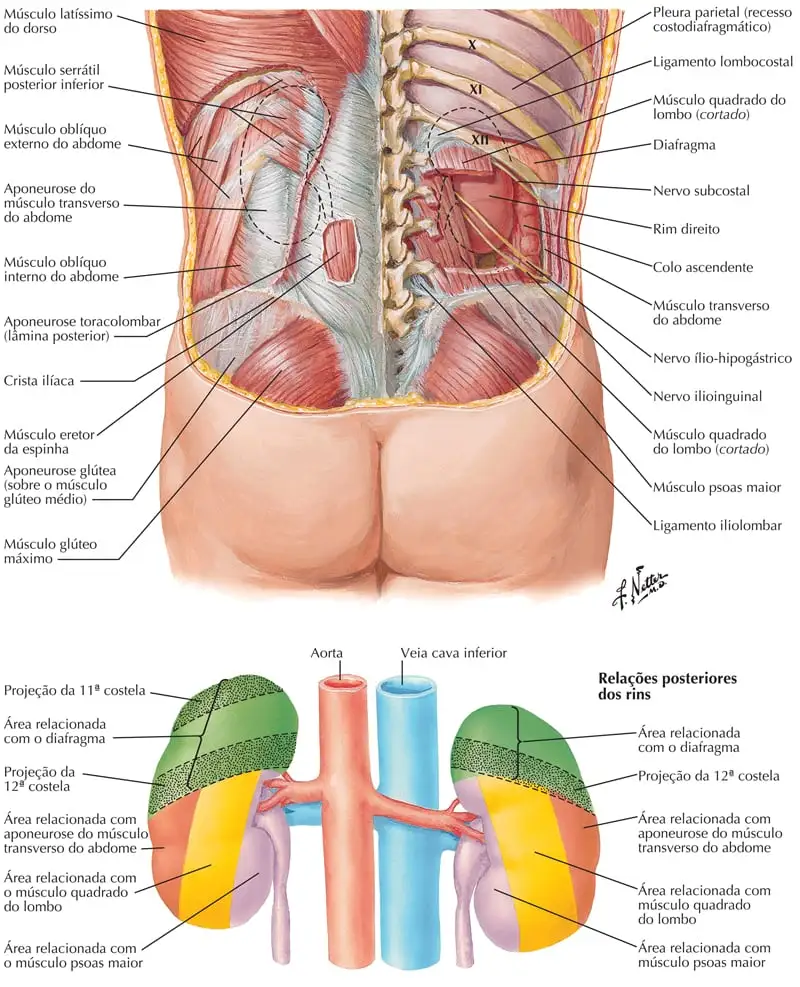
Segmentação dos rins
Assim como diversos órgãos o rim é dividido em segmentos, ou seja, em partes que possuem vascularização independente do restante do órgão.
Esta situação permite ao rim ser cortado sem comprometer o restante do órgão, numa retirada de tumor por exemplo (nefrectomia).
Os segmentos renais são:
Superior;
Inferior;
Ântero-superior;
Ântero-inferior;
e posterior.
Como os rins possuem 5 segmentos, existem portanto 5 artérias que irão irrigar independentemente cada um deles; cada artéria leva o nome do segmento suprido.

Morfologia interna dos rins
No interior do rim é possível notar um córtex renal (extremidade) de coloração mais clara, e uma medula renal (centro) mais escura.
Esta divisão é importante uma vez que os néfrons ou nefrônios (unidade funcional produtora de urina) se situam no córtex renal enquanto que a medula é repleta de estruturas coletoras de urina; de uma forma bem resumida podemos afirmar que o córtex renal possui função de produzir a urina e a medula de coletá-la.
A maior parte do córtex renal se encontra na periferia do rim, porém é possível visibilizar que este lança projeções em direção à medula formando as colunas renais; estas projeções dividem a medula em pequenas estruturas triangulares denominadas de pirâmides renais (de 9 a 12 em cada rim).
O túbulo coletor do néfron localiza-se ao longo desta pirâmide renal e desemboca a urina através de uma abertura presente na extremidade desta pirâmide, a papila renal.
Conectados à esta papila encontramos os cálices renais menores, estrutura que coletam a urina que deixa a pirâmide renal.
Estes cálices menores se unem, geralmente em número de três, para formar os cálices renais maiores, que por sua vez se juntam e formam a pelve renal, primeira parte de um outro órgão chamado ureter.

Néfron
Néfron (ou nefrónio) é uma estrutura microscópica capaz de:
Eliminar resíduos do metabolismo do sangue;
Manter o equilíbrio hidroelectrolítico e ácido-básico do corpo humano;
Controlar a quantidade de líquidos no organismo;
Regular a pressão arterial;
Secretar hormônios;
Além de produzir a urina.
Por esse motivo dizemos que o néfron é a unidade funcional dos rins, pois apenas um único néfron é capaz de realizar todas as funções renais.
O néfron é formado por:
Cápsula de Bowman ou glomerular;
Glomérulo;
Túbulo contorcido proximal;
Alça descendente de Henle ou do néfron;
Alça ascendente de Henle ou do néfron;
Túbulo contorcido distal;
Túbulo coletor.
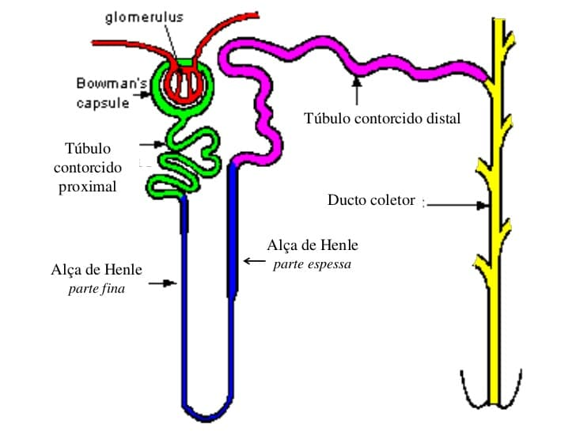
O sangue chega ao néfron por meio dos capilares sanguíneos e chegam até o glomérulo (entrelaçado de capilares), este é envolto pela cápsula de Bowman que tem a função de retirar do sangue praticamente toda a sua parte líquida e junta a ela as substâncias a serem excretadas.
Contudo, o sangue não pode circular somente com o seu plasma sem a parte líquida, por isso praticamente todo o restante do néfron serve para reabsorver o líquido de volta a corrente sanguínea, sobrando uma pequena fração (aproximadamente 1%) deste líquido, que é a urina.
Nesse processo de reabsorção da água, apenas o líquido é reabsorvido, as substância a serem eliminadas ficam na urina.
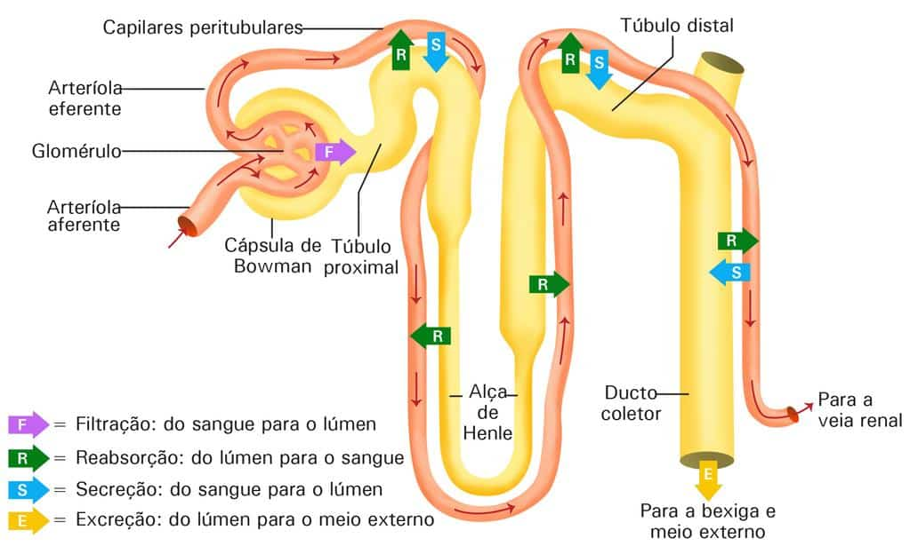
Na camada mais externa do rim, conhecida como cortical, encontram-se principalmente os néfrons corticais, que é constituído por túbulos coletores de menor tamanho.
Na pirâmide renal, também chamada de região medular localizam-se os túbulos de maior tamanho: as alças de Henle e túbulos coletores de urina, terminando na pelve renal.
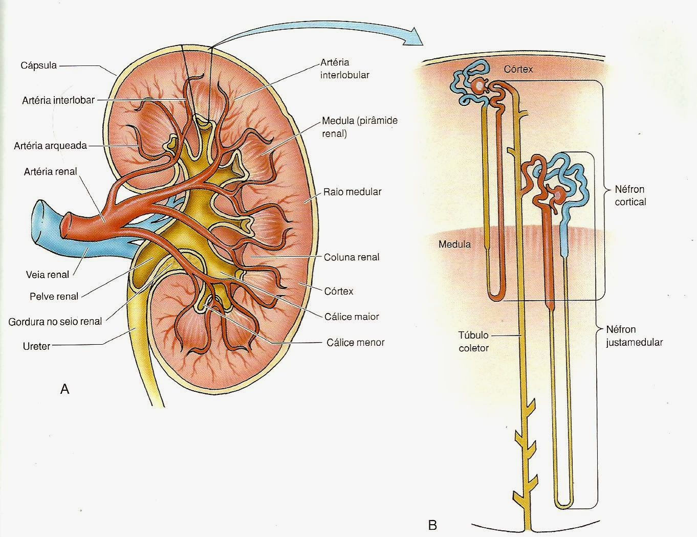

Ureteres
Estes órgãos são tubos musculares que tem a função de conduzir a urina produzida pelos rins até o órgão que irá armazena-la, a bexiga.
A medida que a urina passa pelo ureter, este realiza movimentos peristálticos para conduzir e levá-la adiante, desta forma, mesmo que virássemos uma pessoa de cabeça para baixo, a urina chegaria à bexiga mesmo lutando contra a gravidade.
O ureter se inicia ainda no interior do rim, como pelve renal e segue num sentido inferior atravessando toda a cavidade abdominal e invadindo a pelve óssea, onde vai desembocar na parte posterior e inferior da bexiga.
O ureter é divido em três partes:
– Pelve renal = esta é formada, como vimos anteriormente, pela junção doa cálices renais maiores, é o inicio e a parte mais dilatada de todo o ureter.
– Parte abdominal = é a maior parte do ureter, esta se prolonga da pelve renal até a parte onde o ureter deixa a cavidade abdominal e entra na pelve.
– Parte pélvica = é a ultima parte do ureter, se estende desde o inicio da cavidade pélvica até a bexiga.
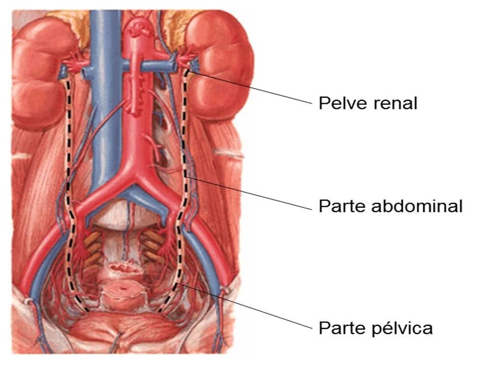
Ao longo do ureter pode-se notar três pontos nos quais o ureter sobre uma constrição, ou seja, um estrangulamento.
Estes pontos são de grande importância clínica, já que nestes locais é comum verificar a presença de cálculos renais (pedras).
As constrições são:
Existem três constrições fisiológicas, nas quais os cálculos advindos da pelve renal podem permanecer:
•Pieloureteral (JUP) – Saída do ureter da pelve renal (“colo do ureter”)
•Ilíaca / Transpélvica – Cruzamento do ureter sobre os vasos ilíacos externos ou comuns
•Intramural (JUV) – Passagem do ureter através da parede da bexiga urinária.
Ocasionalmente, pode ser distinguida uma 4ª constrição no cruzamento do ureter por baixo da A. e V. testiculares ou ováricas.
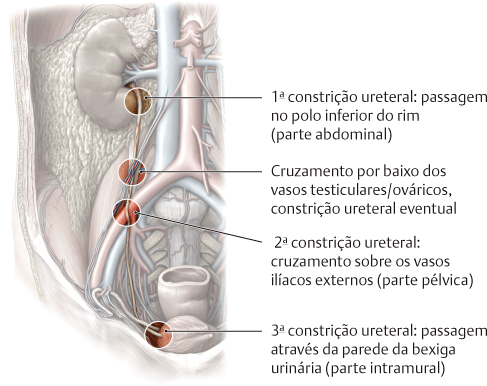
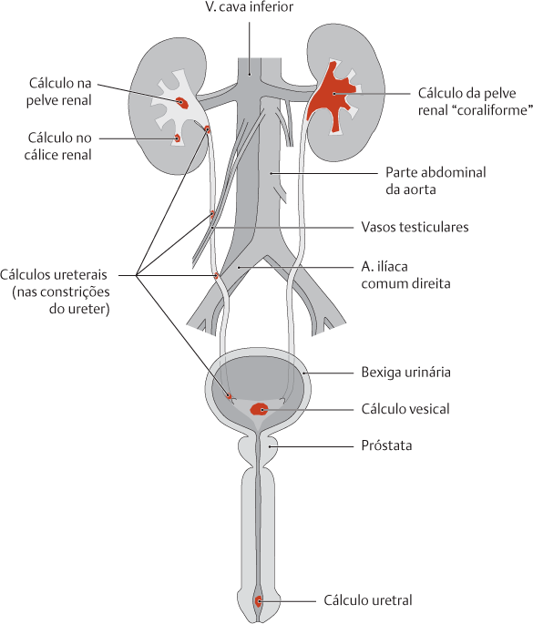
Bexiga urinária
É uma vesícula de musculatura lisa cuja função é de armazenar a urina produzida nos rins e transportadas pelos ureteres até este órgão.
A bexiga é um órgão com grande capacidade de distensão, no homem ela é um pouco maior, tem a capacidade aproximada de 500 a 700 ml, enquanto que a mulher sua capacidade de armazenar a urina é menor, cerca de 350 a 500ml.
No adulto, a bexiga se localiza totalmente na cavidade pélvica, podendo invadir um pouco a cavidade abdominal quando se encontra totalmente cheia.
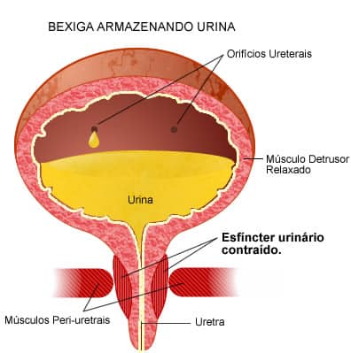
As principais partes da Bexiga são:
Úraco ou ligamento umbilical mediano;
Ápice;
Corpo;
Trígono;
Colo;
Fundo.
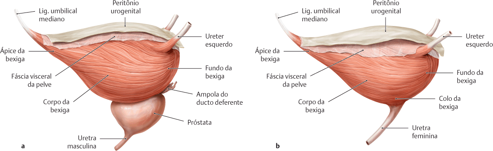
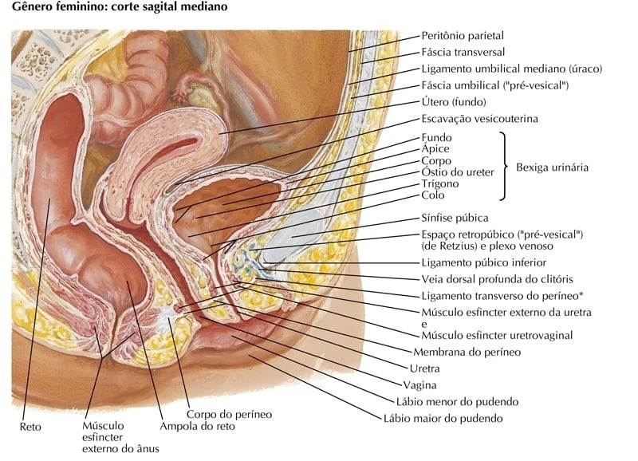
No interior da bexiga existem três orifícios independentes que formam o trígono da bexiga:
Dois óstios ureterais – estes orifícios são formados pela entrada do ureter na bexiga.
Um óstio interno da uretra – início da uretra, é a abertura pela qual a urina deixa a bexiga para ser eliminada.
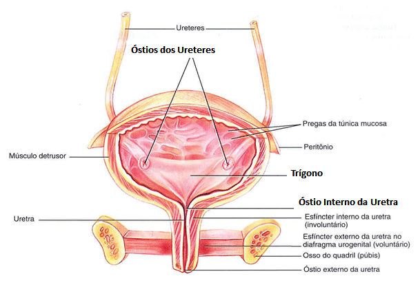
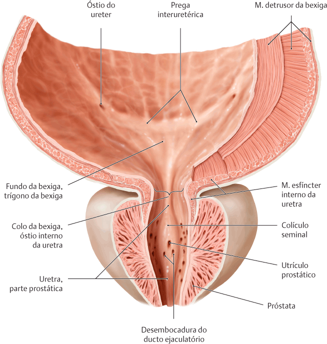
Uretra
A uretra é o único órgão que é diferente entre os sexos, isso porque a uretra masculina participa dos sistema urinário e genital, ou seja, serve tanto para a eliminação da urina quanto para a ejaculação, enquanto que nas mulheres, a uretra tem função exclusiva de eliminar a urina.
Na mulher, a uretra se inicia no interior da bexiga, atravessa o m. esfíncter (controla a micção) e se abre no pudendo através do óstio externo da uretra, mede cerca 5 centímetros.
Já nos homens a uretra se inicia no interior da bexiga, atravessa a próstata, o m. esfíncter e todo o corpo esponjoso do pênis, abrindo-se no óstio externo da uretra localizado na glande do pênis, pode chegar a medir 25 centímetros.
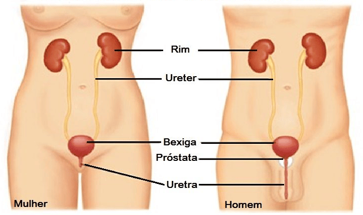
Divisões da uretra masculina:
– Parte intramural – é a parte inicial da uretra, que atravessa a parede da bexiga urinária (não é descrita por alguns autores)
– Parte prostática – é a parte onde a uretra passa dentro da próstata, nesse ponto que a uretra recebe a maior parte do sêmem (produzido pela próstata)
– Parte membranosa / membranácea – nesse ponto a uretra atravessa o m. esfíncter, é a parte da uretra do homem que é estrangulada para “segurar” a micção.
– Parte esponjosa – é a maior parte da uretra, atravessa todo o corpo esponjoso do pênis e se abre na sua glande através do óstio interno da uretra.
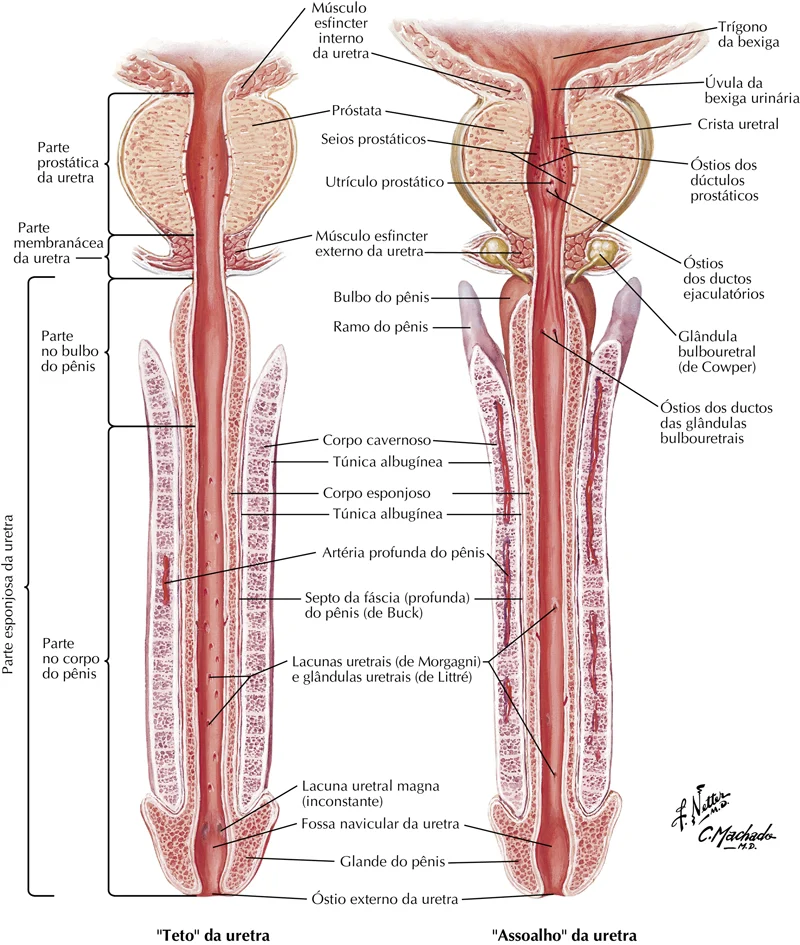